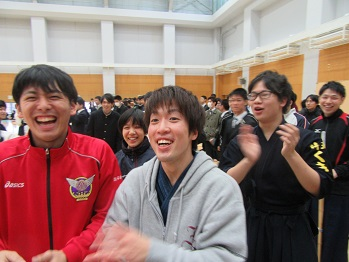

|
[2016年秋季二季杯～明治大学編～]
11月13日に行われた秋季二季杯の様子を（明治に代わって）お伝えします。何はともあれ男子優勝おめでとうございます！ 我らが早稲田大学剣道同好会と長きにわたってお付き合いいただいている明治大学体同連剣道部さんとどれほど仲良く しているのか、がわかっていただけると思います。明大の幹事長の許可もおりてます！それではどうぞ！ すべてはこの渡邊（3年・左）と長谷川（2年・右）の写真から始まった… 左は宮原（1年）。会場内ですれ違うたびにこんな感じで… 陣中見舞いにくる主将の後輩、西澤（2年）を撮ってしまいました。 もはや他大のカメラに向けられたポーズではない盆子原（2年） 個人戦で早明対決が実現。高倉（3年）は公式で勝利がないとか… しかし、その直後に歓声が。というのも… 決定的瞬間。 これにはオーディエンスも大盛り上がり！ 
そして試合終了！  まぁ、勿論戻ってきたら祝福しますよね？ でも、これは… 絶対に祝福の度を越している…だって蹴ってない？ もうこうなったら明治の広報も兼任ですわ。 右は岡安（2年）。でもそろそろ女子も撮りたいなーと。 そこへ小夏（2年・左）と江森（2年・右）が。もーぅ、鼻血ブーですよぉぉぉぉ だからおまえははいってくるなよ。 後輩もこんなに仲良くしてます。そういえば永安と宮原は先輩後輩なのか…（こなみ） キメ顔・西村（3年） ピチピチジャンパー・野本（3年）。撮影は小夏に指示されました（俺はなんなんだ） 高校が同じお二人（池田・2年・左と大石・５５期）。かわゆす～。 なにって、ただあるから使ったのよ。 國分（1年）。リュックはおろせばよいのに… ここにきてようやく主将・竹内が登場。しかしこの一枚だけ。（ごめん） だってこいつらの主張が激しいんだもの。 睡眠中の中野（2年）。こころなしか、かわいい寝方。 
最後はこれ。山﨑の説教をヘラヘラ聞いている長谷川（2年）。 地味にだけど、後ろの渡邊が顔作ってるのじわじわきた。 以上、二季杯の明治体同連の様子でした。 これからも末永くよろしくお願いします。というか、Youtubeのアカウントをどうにかしてください！ (※写真へのコメントは全て管理人がしております。) |